# 3D Druck Hands On ### Matthias Berg-Neels & Christian Heller > [Folien-Download](../pdfdownloads/3D_Druck_Hands_On.pdf) ---- ## Übersicht 1. Was kann man Drucken? 2. Wie funktioniert das nochmal? 3. Wie kommt das Design auf den Drucker? 4. Was kann schief gehen? 4. Was sollte man beachten? --- # Was kann man Drucken? ---- ## Smartphone Cover <div align="center"> 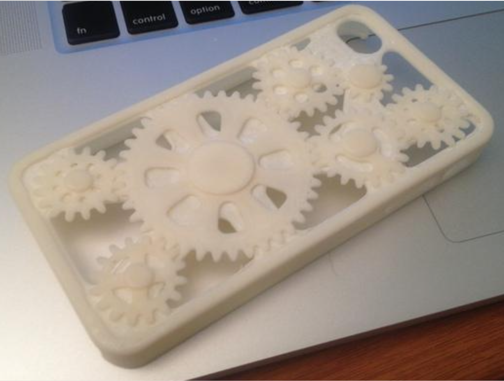<!-- .element style="border: 0px; box-shadow: 0 0 0 0" --> </div> ---- ## Smartphone Cover <div align="center"> 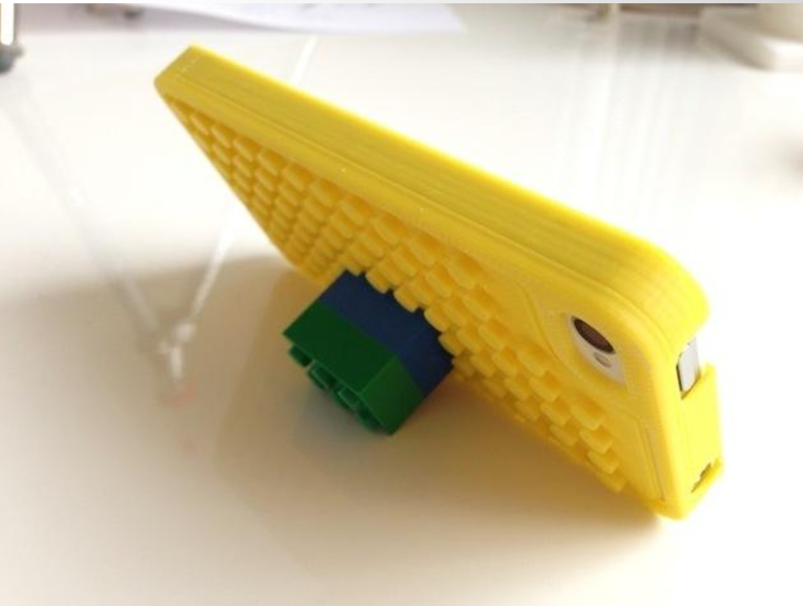<!-- .element style="border: 0px; box-shadow: 0 0 0 0" --> </div> ---- ## Nützliches <div align="center"> <!-- .element style="border: 0px; box-shadow: 0 0 0 0" --> </div> ---- ## Fashion <div align="center"> 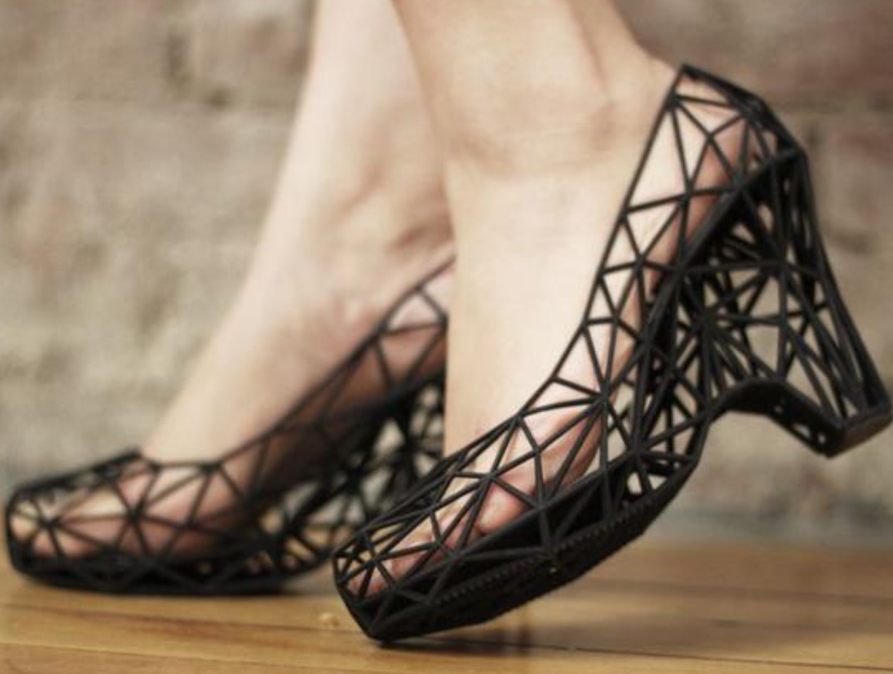<!-- .element style="border: 0px; box-shadow: 0 0 0 0" --> </div> ---- ## Cooles <div align="center"> 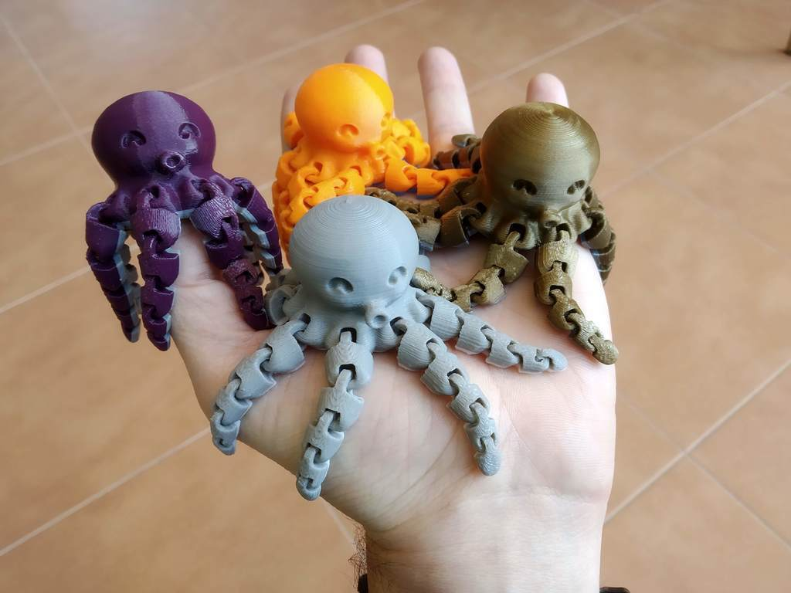<!-- .element style="border: 0px; box-shadow: 0 0 0 0" --> </div> [printables.com - 178035-cute-mini-octopus](https://www.printables.com/de/model/178035-cute-mini-octopus) ---- ## Fidget (noch cooler) <div align="center"> 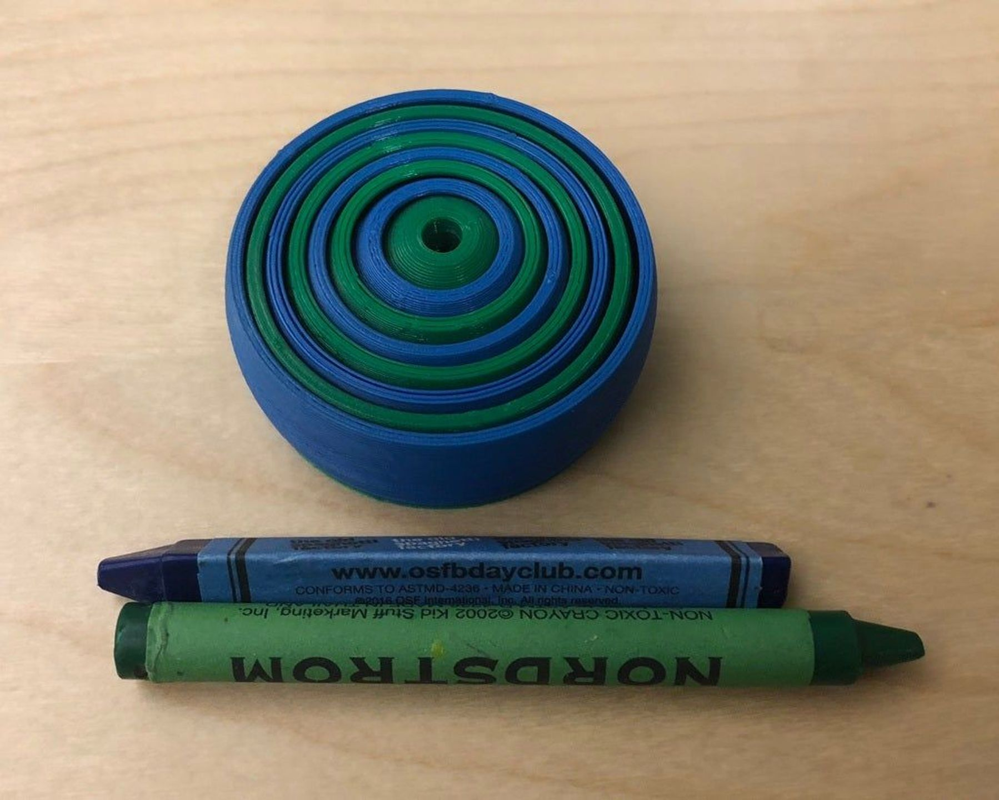<!-- .element style="border: 0px; box-shadow: 0 0 0 0" --> </div> [printables.com - 66748-fidget-ring-thing](https://www.printables.com/de/model/66748-fidget-ring-thing) ---- ## Mal was eigenes - Das Problem <div align="center"> 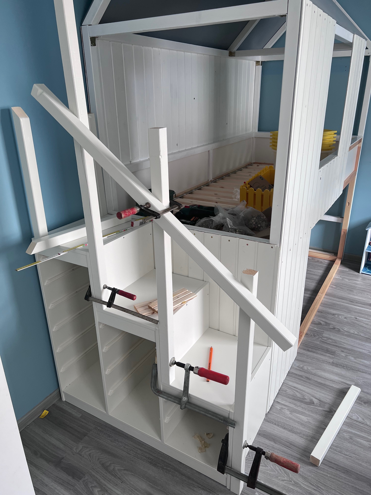<!-- .element style="border: 0px; box-shadow: 0 0 0 0" --> </div> ---- ## Mal was Eigenes - Im Druck <div align="center"> 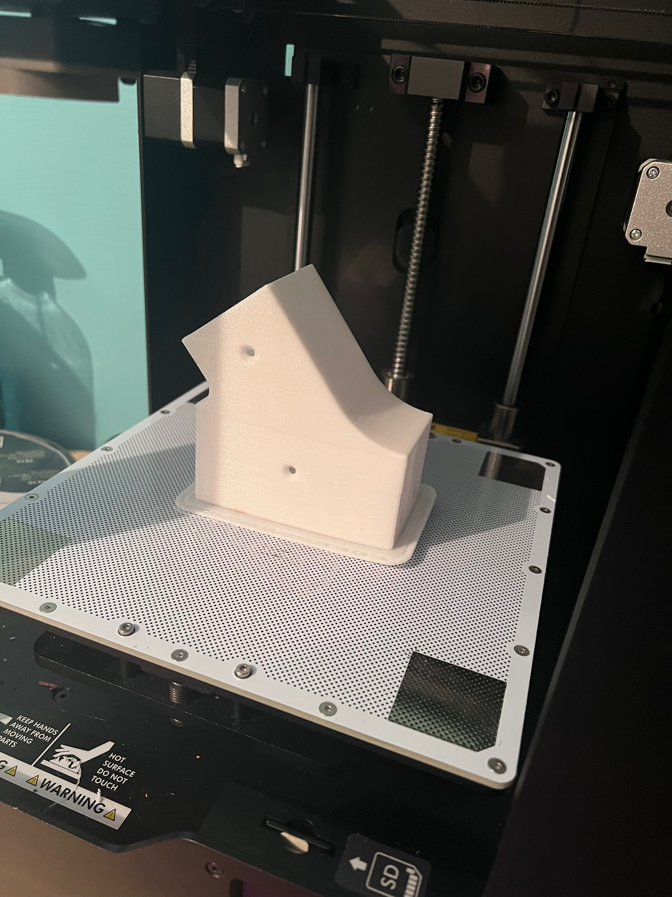<!-- .element style="border: 0px; box-shadow: 0 0 0 0" --> </div> ---- ## Mal was Eigenes - Das Ergebnis <div align="center"> 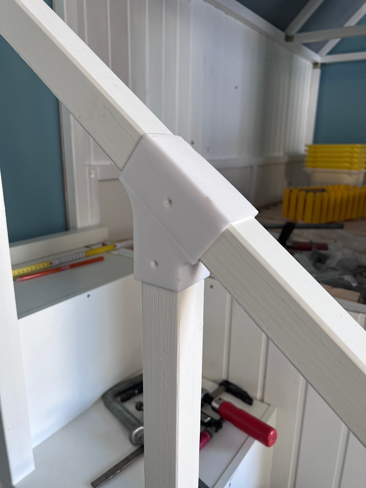<!-- .element style="border: 0px; box-shadow: 0 0 0 0" --> </div> --- # Wo kommen die Modelle her? ---- ## Unendliche Quellen im Internet * [thingiverse.com](https://www.thingiverse.com) * [printables.com](https://www.printables.com/de) * [cults3d.com](https://cults3d.com) * ... ---- ## oder ... > Selber machen * [shapr3d](https://www.shapr3d.com) * [Autodesk - Fusion360](https://www.autodesk.de/products/fusion-360/personal) --- # Wie funktioniert das nochmal? ---- ## Schematischer Aufbau <div align="center"> 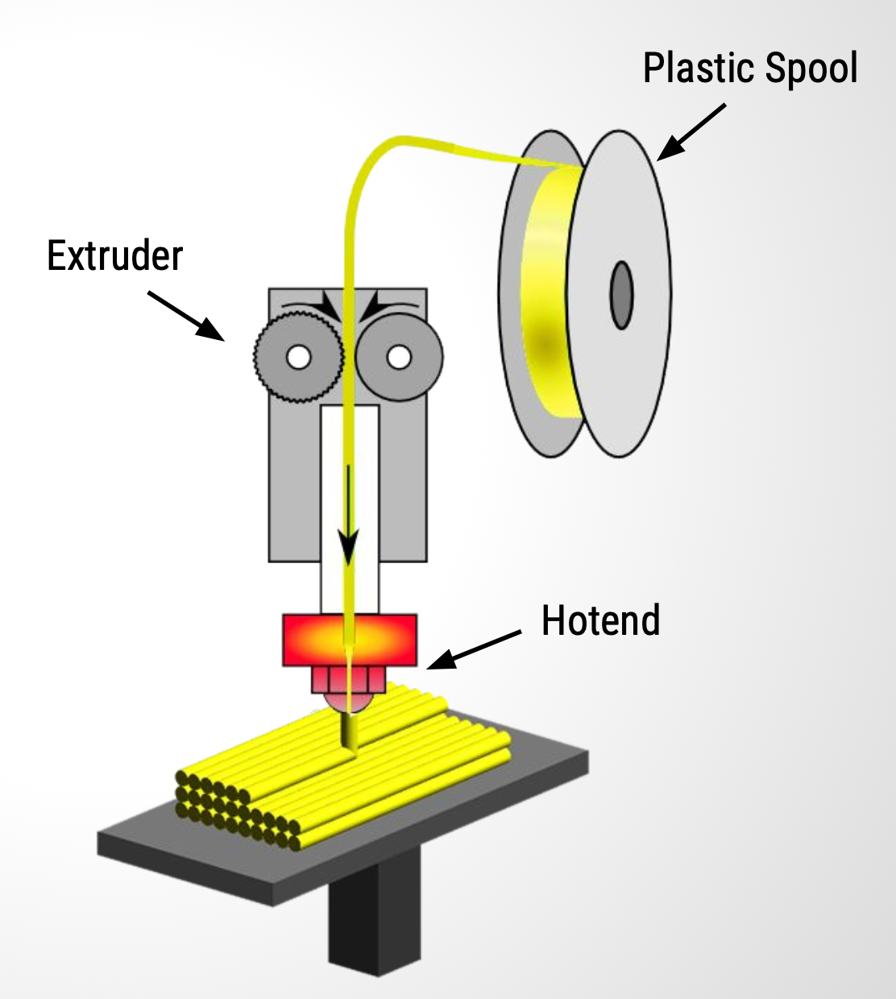<!-- .element style="border: 0px; box-shadow: 0 0 0 0" --> </div> ---- ## Ganz Nah <div align="center"> 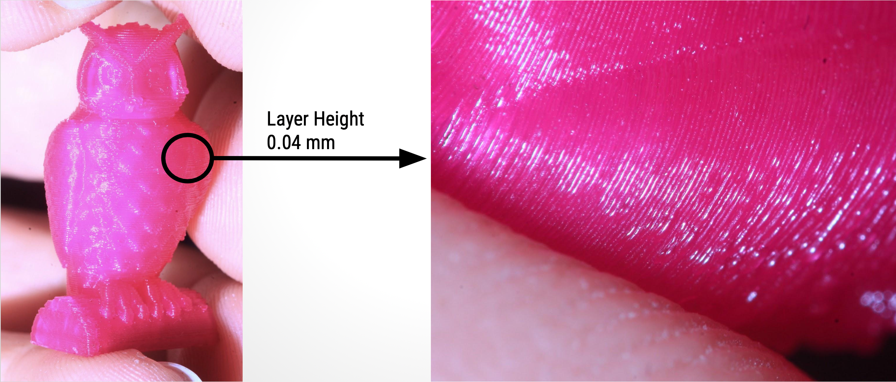<!-- .element style="border: 0px; box-shadow: 0 0 0 0" --> </div> --- # Wie kommt das Design auf den Drucker? ---- ## Vom Design zum Drucker <div align="center"> 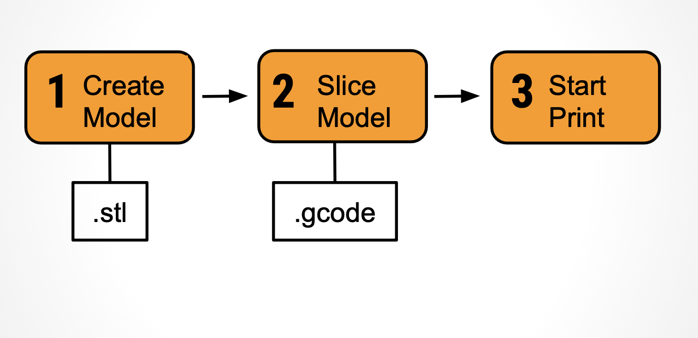<!-- .element style="border: 0px; box-shadow: 0 0 0 0" --> </div> ---- ## Slicer Software <div align="center"> 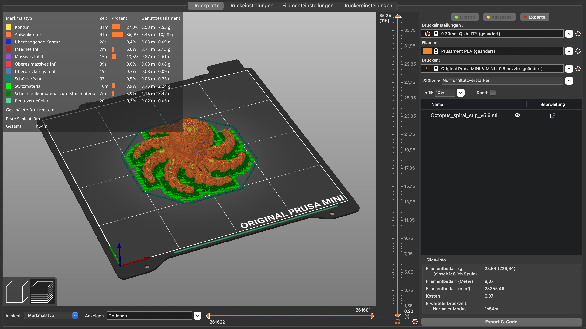<!-- .element style="border: 0px; box-shadow: 0 0 0 0" --> </div> [Prusa Slicer](https://www.prusa3d.com/de/page/prusaslicer_424/) ---- ### Slicer Funktionen * Model in Schichte "zerschneiden" * Einstellen der Model-Parameter * Berechnen der Füllung (```Infill```) * Brechnen der Unterstützungsstrukturen (```Support```) * Berechnen des Fundaments (```Raft```) * Erste- und Letzte-Schicht Dicke * Aushüllen-Stärke * Einstellen der Druck-Parameter * Temperatur (Nozzle & Druckbett) * Geschwindigkeiten und Beschleunigungen (Achsen, Filamentrückzug, ...) * Berechnen der Druckpfade * ... ---- ## Füllung (```Infill```) <div align="center"> 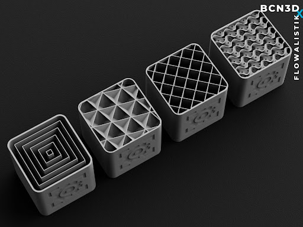<!-- .element style="border: 0px; box-shadow: 0 0 0 0" --> </div> ---- ## Unterstützungsstrukturen (```Support```) <div align="center"> 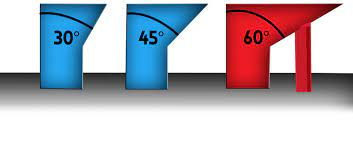<!-- .element style="border: 0px; box-shadow: 0 0 0 0" --> </div> ---- ## Unterstützungsstrukturen (```Support```) <div align="center"> 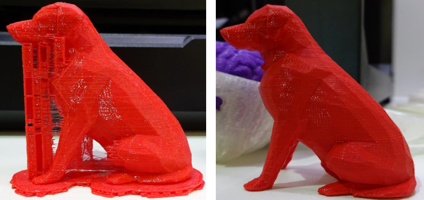<!-- .element style="border: 0px; box-shadow: 0 0 0 0" --> </div> ---- ## "Fundament" (```Raft```) <div align="center"> 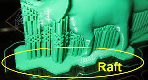<!-- .element style="border: 0px; box-shadow: 0 0 0 0" --> </div> ---- ## "Fundament" (```Raft``` / ```Brim``` / ```Skirt```) <div align="center"> 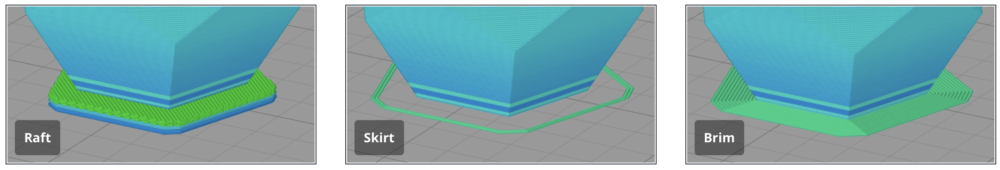<!-- .element style="border: 0px; box-shadow: 0 0 0 0" --> </div> --- # Was kann schief gehen? ---- ## Stringing <div align="center"> 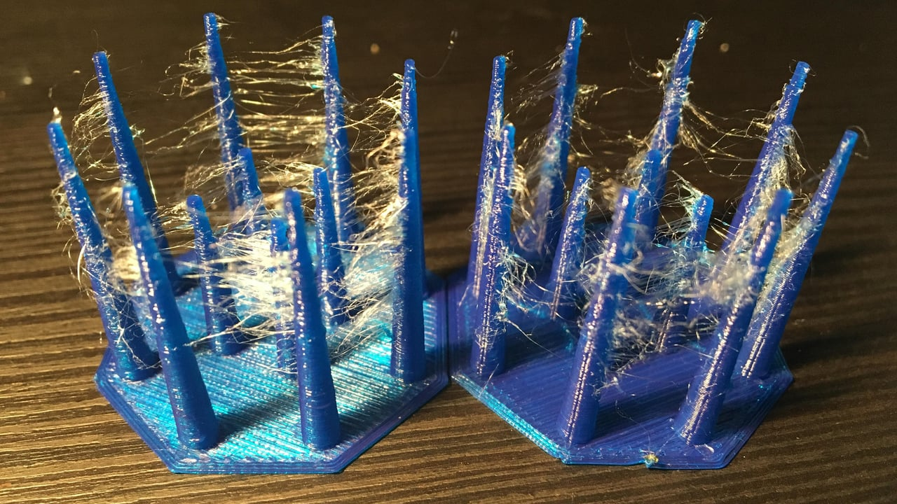<!-- .element style="border: 0px; box-shadow: 0 0 0 0" --> </div> ---- ## Bridging <div align="center"> 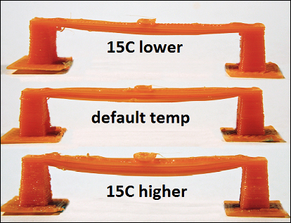<!-- .element style="border: 0px; box-shadow: 0 0 0 0" --> </div> ---- ## Warping <div align="center"> 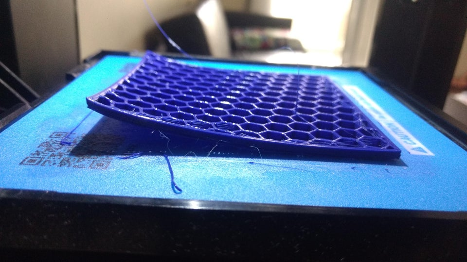<!-- .element style="border: 0px; box-shadow: 0 0 0 0" --> </div> ---- ## Spaghetti Drucken <div align="center"> 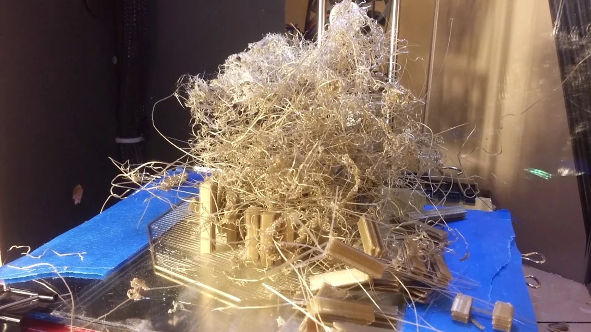<!-- .element style="border: 0px; box-shadow: 0 0 0 0" --> </div> ---- ## Reapetability > kein Druck gleicht dem Anderen > (Zumindest beim Hobby-Druck) --- # Was sollte man beachten? <div align="center"> <!-- .element style="border: 0px; box-shadow: 0 0 0 0" --> </div> ---- ### Praktische Tipps * sehr viel Geduld mitbringen * die erste Schicht ist extrem wichtig * Pflege ist alles * neugier zu lernen und eine hohe Frusttoleranz